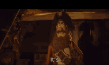
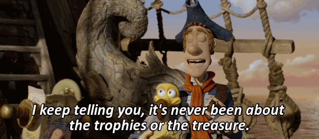
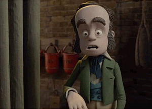
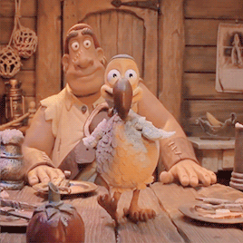

Characters
Pirate Captain
The Pirate Captain is an enthusiastic but slightly clueless leader who dreams of winning the Pirate of the Year award. He's determined and full of heart, even if he’s not the most successful pirate.
Number Two
The Pirate Captain’s loyal first mate. Number Two is the brains behind most of the crew's plans and often helps keep things from falling apart.
Charles Darwin
A young scientist who discovers that the Pirate Captain’s “parrot” is actually the last living dodo. He helps the crew but has his own hidden agenda.
Queen Victoria

The main villain of the story. She hates pirates and has a secret obsession with exotic animals. She’s powerful, ruthless, and not to be underestimated.
Polly
Polly is the Pirate Captain’s beloved “parrot”. Except she’s not a parrot at all, but the last living dodo! Sweet, rare, and loyal, Polly is treated like family by the crew and plays a key role in their adventures. Her true identity becomes a major turning point in the story.